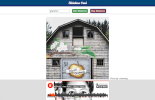
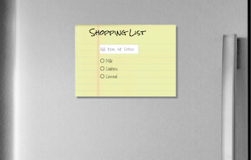
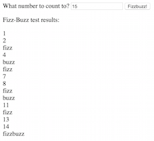
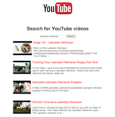
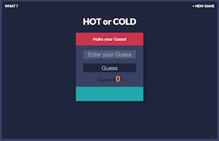

Recent Projects
-
API Hack
In this project I used the Instagram API along with the Soundcloud API to create a slideshow based on a user-supplied tag set to music.
-
Shopping List
This project uses jQuery to create a to-do list where items can be added, removed and reordered.
-
Street Fighter
This fun exercise uses jQuery to animate an action figure and play music all based on user inputs.
-
FizzBuzz
The classic where it prints numbers unless they are divisible by 3 (Fizz), divisible by 5 (Buzz) or divisible by both (FizzBuzz).
-
YouTube Search
A simple page that searches YouTube for videos matching a search string.
-
Hot or Cold App
A game where the user guesses the randomly selected number and is told whether they are hot or cold in relation to how close to the number their guess was.